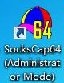
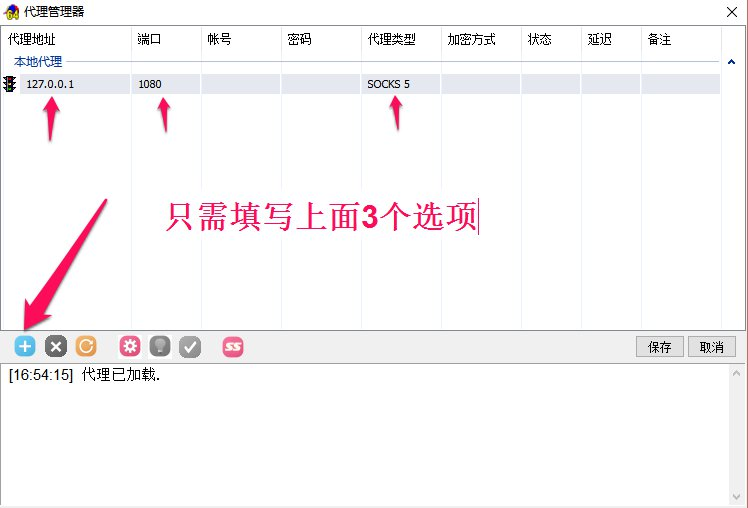
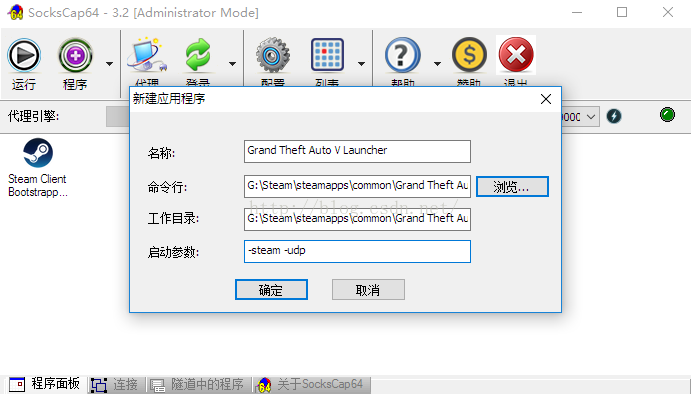

利用ScoksCap64代理Steam\LOL进行游戏教程教程
点击加入QQ群 614909362

Scokscap64
下面为美服DNF演示
Step1.首先下载SocksCap64
官方下载
Step2..开启Shadowsocks（不会点这里），下载并安装SocksCap64，点击代理，如下图。

安装后桌面会有两个图标，请用Administrator or Mode 启动
Step3.点击+号来添加本地代理，信息如图所示，IP填127.0.0.1，端口1080，类型socks5，保存，
然后点击绿色勾勾测试是否成功。
Step4.添加程序。可以通过拖入快捷方式的方式添加程序，或者添加一个可执行文件，主要是准确的填写EXE文件的路径即可。
启动参数 -steam -udp
添加完毕，右键点击想要使用代理的程序“在代理隧道中运行选中程序”，畅玩吧！